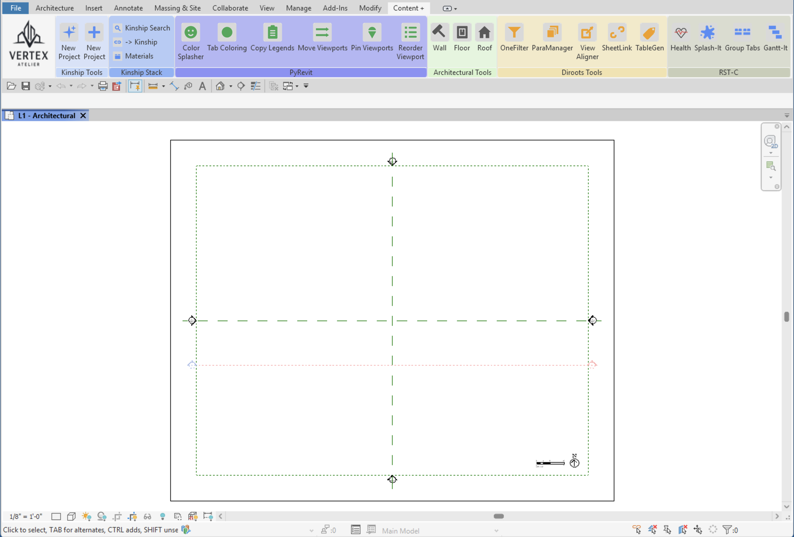
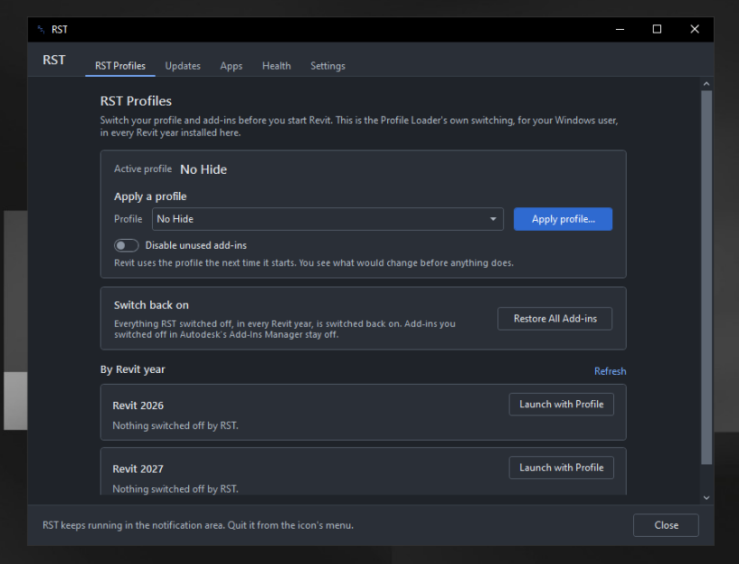

Profile Builder
Search commands from every Revit and add-in tab, arrange panels and stacks, choose icons and colours, and export a self-contained profile for the team.
Builder documentationNative add-in for Revit 2025–2027
Bring commands from any Revit or add-in tab into one curated ribbon. Add colours, icons, branding, and custom resources, then share a profile your team can load in one click.

New Feature highlight · v3.4
You know the tool exists, just not which tab it lives on. Click Search-It on the RST panel, type a few letters, and click the result. Revit starts the tool as if you had found it on the ribbon.
Tab › Panel, so you learn where it livesOne add-in. Make it yours.
Curate tools from any Revit or add-in tab, then shape each profile with colours, icons, branding, and custom resources. RST keeps building, sharing, and loading straightforward.
Search commands from every Revit and add-in tab, arrange panels and stacks, choose icons and colours, and export a self-contained profile for the team.
Builder documentationPreview a profile, check its required add-ins, and load the right ribbon in one click—without restarting Revit.
Loader documentationMake every profile recognisable at a glance with company branding and panel colours. Add web links, email addresses, and file shortcuts alongside Revit commands.
Appearance documentationHide tabs the profile does not need, keep its dependencies visible, and restore the previous setup when you switch back.
Ribbon Tools documentationInspect workstation and model health, review active time, and clean known junk locations. Activity data stays on the local PC.
Health documentationPrepare profiles before Revit starts, manage companion add-ins, check for updates, and review model activity outside Revit.
Tray documentationFrom curated to ready
Build the ribbon once, share the whole package, and let each person load it in a click. Commands, icons, colours, and branding travel together.
Choose commands from any tab, organise panels and stacks, and add the colours, icons, branding, and resources your team needs.
Export one self-contained .zip with the profile, icons, colours, and branding included.
Import, preview, and apply. Everyone gets the same polished ribbon, with live switching and no Revit restart.

Outside Revit, still RST
The small RST tray app brings profile switching, updates, companion apps, and health information together in one place. Nothing in Revit depends on it.
Clear by design
Install for one Windows account or the whole PC, then learn the Loader, Builder, ribbon tools, and tray at your own pace.
Read the installation guideReady when you are
Get RST for Revit 2025, 2026, and 2027. Choose the EXE for optional Gantt-It, Splash-It and Pick-It companion installs, or the MSI for RST alone.